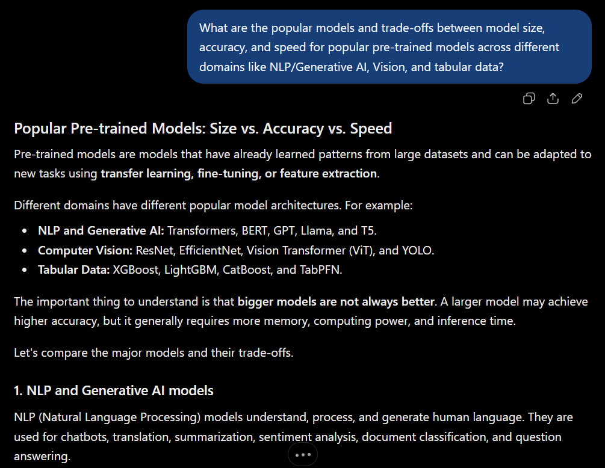
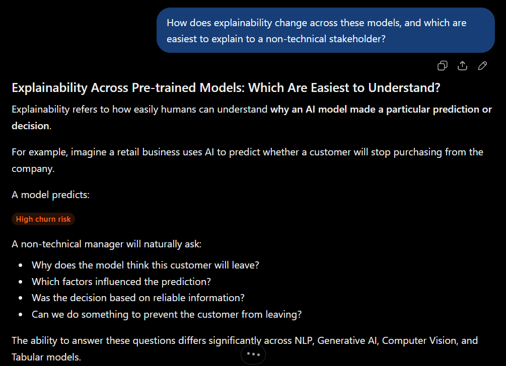

A decision matrix for 13 pre-trained models across NLP, generative AI, computer vision, and tabular data, with sourced benchmarks, an interactive weighted scorer, and recommendations for real application scenarios
Choosing a Pre-trained Model: Size, Accuracy, Speed, and Explainability
Teams rarely train models from scratch; they pick a pre-trained one. The biggest or most accurate model is often the wrong pick once memory, latency, cost, and the need to explain decisions are counted.
A decision matrix comparing 13 models in four domains on size, accuracy, speed, and interpretability, supported by benchmark charts, an explainability spectrum, a decision flow, and scenario recommendations.
Show how size, accuracy, and speed trade off within each domain, how those trade-offs affect explainability, and which model fits which application.
Selected representative small, medium, and large models per domain; collected parameters, benchmark scores, and speed figures from the original papers and model cards; rated each model within its domain; then built the matrix and recommendations from those ratings.
Original papers and the Llama 3.1 model card for data; HTML, CSS, inline SVG, and vanilla JavaScript for the charts and weighted scorer; ChatGPT for the suggested prompt; GitHub Pages for publishing.
A reader can set their own priorities, such as "runs on a phone" or "must be explainable to a regulator," and see which model ranks first in each domain and why.
Ratings are compared only within a domain, since a GLUE score and an ImageNet score cannot be compared. Every number names its benchmark and source, and interpretability is rated alongside the usual three criteria.
Useful for engineers choosing a model for a new feature, for QA and data teams who must validate and explain it, and for managers weighing accuracy against hardware cost.
22 sources: the original papers for every model, the Llama 3.1 model card, the GPT-4 technical report, benchmark papers, and explainability research. Full list below.
Four findings that show bigger is not automatically better.
DistilBERT keeps 97% of BERT's language understanding and runs 60% faster (Sanh et al., 2019).
EfficientNet-B0 beats ResNet-50 on ImageNet (77.1% vs 76.0%) with 0.39B instead of 4.1B FLOPs (Tan & Le, 2019).
TabPFN beat an ensemble of baselines tuned for four hours on small datasets in 2.8 seconds (Hollmann et al., 2025).
Moving from Llama 3.1 8B to 70B raises MMLU from 66.7 to 79.3, for about 9 times the memory (Meta, 2024).
A pre-trained model is a model someone else has already trained on a large dataset, which you reuse or fine-tune for your task. Choosing one means balancing three properties that pull against each other, with explainability at the center: a model you cannot explain is hard to validate, debug, or defend, and NIST's principles for explainable AI ask that an explanation be accurate and meaningful to its audience (Phillips et al., 2021).
Within a model family, more parameters raise benchmark scores: Llama 3.1 gains 12.6 MMLU points from 8B to 70B, and EfficientNet gains 7.2 ImageNet points from B0 to B7.
Larger models need more memory and compute per prediction, which means slower responses, bigger GPUs, and more energy. A 70B model in 16-bit precision needs about 140 GB of memory just for its weights.
Smaller and simpler models are easier to explain. Rudin (2019) argues that for high-stakes decisions an interpretable model should be preferred over explaining a black box afterwards, and on tabular data that choice often costs little accuracy.
Thirteen models were chosen so that each domain has a small, a mid-sized, and a large or specialized option. All figures come from the original papers or model cards.
Picked widely used models named in the assignment (GPT, BERT, MobileNet, EfficientNet, XGBoost, LightGBM, and Random Forest; Breiman, 2001) plus a size counterpart for each: DistilBERT, Llama 3.1 8B and 70B, ResNet-50, and TabPFN.
Recorded parameters, a standard benchmark score, and a speed measure for each model from its primary source. Where a developer withholds a figure, such as GPT-4's size, it is marked as not disclosed.
Scored size, accuracy, speed, and interpretability from 1 to 5 relative to the other models in the same domain, because benchmarks differ between domains.
Combined the ratings with weights for common scenarios (mobile, regulated, maximum accuracy) to produce rankings and a decision flow.
| Domain | Accuracy benchmark used | Speed measure used | Main sources |
|---|---|---|---|
| NLP understanding | GLUE: nine sentence-understanding tasks (Wang et al., 2018) | CPU time for a full pass of the STS-B dev set, batch size 1 | Devlin et al. (2019); Sanh et al. (2019) |
| Generative AI | MMLU 5-shot: 57 subjects (Hendrycks et al., 2021) | Weight memory in 16-bit precision (2 bytes per parameter) and GPUs needed | Meta (2024); OpenAI (2023) |
| Computer vision | ImageNet top-1 accuracy | FLOPs per image; phone latency where reported | Howard et al. (2019); Tan & Le (2019); He et al. (2016) |
| Tabular data | Relative results on benchmark suites; no single shared score | Reported training speed-ups | Ke et al. (2017); Chen & Guestrin (2016); Grinsztajn et al. (2022); Hollmann et al. (2025) |
The numbers behind the ratings. Each chart compares models only within one domain.
ImageNet top-1 accuracy vs FLOPs per image (log scale). Up and to the left is better.
Sources: Howard et al. (2019) for MobileNet; Tan & Le (2019) for EfficientNet and ResNet-50. ResNet-50 (grey) uses about 10 times the compute of EfficientNet-B0 for lower accuracy. MobileNetV3-Large runs in 51 ms on a Pixel 1 phone.
Knowledge distillation trains a small model to copy a large one.
Source: Sanh et al. (2019), Tables 1 and 3. BERT-base scores 79.6 on the GLUE test set (Devlin et al., 2019).
Llama 3.1 base models, plus GPT-4 for reference.
Sources: Meta (2024) model card; OpenAI (2023). Memory is parameters × 2 bytes and excludes the cache that grows with prompt length. GPT-4's size is not disclosed.
Tabular models are trained on your own data, so their evidence comes from benchmark suites rather than one shared score.
LightGBM trains up to more than 20 times faster than conventional gradient boosting with almost the same accuracy (Ke et al., 2017).
XGBoost scales beyond billions of examples using far fewer resources than earlier systems (Chen & Guestrin, 2016).
Tree-based models remain state of the art on medium-sized tabular data, ahead of deep learning (Grinsztajn et al., 2022).
TabPFN, a transformer pre-trained on millions of synthetic datasets, beats tuned baselines on datasets of up to 10,000 samples (Hollmann et al., 2025).
Each criterion is rated from 1 to 5 (●●●●● is best) relative to the other models in the same domain. For size and speed, more dots mean smaller and faster. The note under each rating gives the figure it is based on.
| Model | Model size | Accuracy | Speed | Interpretability | Other considerations | Best fit |
|---|---|---|---|---|---|---|
| NLP understanding | ||||||
| BERT-base | 110M params | GLUE dev 79.5 | 668 s CPU | Small enough for SHAP and probing | Huge fine-tuning ecosystem; understands text but does not generate it | Accuracy-first classification |
| DistilBERT | 66M params | GLUE dev 77.0 | 410 s CPU | Same methods as BERT | Runs on CPU; cheaper to serve at volume | High-volume or on-device text |
| Generative AI | ||||||
| Llama 3.1 8B | 8B params, ~16 GB | MMLU 66.7 | One GPU | Open weights allow internal inspection | Self-hosted, so data stays private; 1.46M GPU hours to train | Private, low-cost assistants |
| Llama 3.1 70B | 70B params, ~140 GB | MMLU 79.3 | Several GPUs | Open weights | Near-frontier quality on-premises; high hardware cost; 7.0M GPU hours to train | Private, high-quality generation |
| GPT-4 (API) | Not disclosed; nothing to host | MMLU 86.4 | Network and provider dependent | Closed: outputs only | Easiest to integrate; pay per token; data leaves your network | Best quality, fast prototyping |
| Computer vision | ||||||
| MobileNetV3-Large | 5.4M params | ImageNet 75.2% | 0.22B FLOPs, 51 ms on phone | Grad-CAM heatmaps | Designed for phones; lowest energy per image | Mobile and edge devices |
| EfficientNet-B0 | 5.3M params | ImageNet 77.1% | 0.39B FLOPs | Grad-CAM heatmaps | Family scales B0 to B7 with one recipe | Balanced default |
| ResNet-50 | 26M params | ImageNet 76.0% | 4.1B FLOPs | Grad-CAM; most studied | Supported by every framework and tool; common baseline | Baseline and legacy pipelines |
| EfficientNet-B7 | 66M params | ImageNet 84.3% | 37B FLOPs | Grad-CAM heatmaps | Needs a server GPU; highest energy per image | Accuracy-critical, server-side |
| Tabular data | ||||||
| Random Forest | Hundreds of deep trees | Strong baseline | Trees train in parallel | Feature importance, exact TreeSHAP | Few settings to tune; robust to noisy features | Quick, reliable baseline |
| XGBoost | Shallow boosted trees | Top tier on ~10K-row data | Scales to billions of rows | Exact TreeSHAP | Mature, widely deployed; many hyperparameters | Regulated scoring |
| LightGBM | Compact leaf-wise trees | Near XGBoost accuracy | Up to 20× faster training | Exact TreeSHAP | Lowest training energy; can overfit small data | Large data, frequent retraining |
| TabPFN v2 | Pre-trained transformer | Beats tuned baselines ≤10K rows | No training; slower predictions | Post-hoc SHAP only | Limited to small datasets; works best with a GPU | Small datasets, no tuning time |
Why Gemini is not rated: the assignment names Gemini, but Google does not publish its parameter count, and its headline benchmark results use different prompting settings from the Llama and GPT-4 figures above. Rating it would mean comparing unlike numbers, so it is left out rather than estimated.
Move the sliders or choose a preset. Each model's score is the weighted average of its four ratings, scaled to 100, and the top model in each domain is highlighted.
Explainability falls as models grow larger and more closed. What you can explain depends on what you can access: the model's structure, its weights, or only its outputs.
Fast, exact per-prediction explanations: the first polynomial-time algorithm for optimal explanations of tree models (Lundberg et al., 2020).
Heatmaps show which image regions drove a prediction (Selvaraju et al., 2017); text models are small enough for SHAP. These explain correlations, not the full mechanism.
Weights are available, so researchers can study internal features, but billions of parameters make full explanations impractical.
Only prompts, outputs, and the developer's published system documentation are available to outside users.
| Model | Strengths | Weaknesses |
|---|---|---|
| BERT-base | Strong text understanding after fine-tuning; well documented | Cannot generate text; slower than its distilled version |
| DistilBERT | 97% of BERT's understanding at 60% of the size, on CPU | Small accuracy loss that matters for hard tasks |
| Llama 3.1 8B | Open, private, runs on one GPU; fine-tunable | Weakest of the three generative models on MMLU |
| Llama 3.1 70B | Much stronger reasoning while staying private | About 140 GB of weights; several GPUs; slow |
| GPT-4 (API) | Highest accuracy; no infrastructure to run | Closed and least explainable; data leaves your systems; per-token cost |
| MobileNetV3-Large | Smallest and fastest; runs on phones | Lowest accuracy of the four vision models compared |
| EfficientNet-B0 | Best accuracy per FLOP; same size as MobileNet | Slightly slower than MobileNetV3 on phones |
| ResNet-50 | Universal tool support; well-understood behavior | 10× the compute of EfficientNet-B0 for lower accuracy |
| EfficientNet-B7 | Highest accuracy in the group (84.3%) | About 95× the FLOPs of B0; server GPU needed |
| Random Forest | Hard to misconfigure; explainable | Usually a little below boosted trees; large on disk |
| XGBoost | Top accuracy on medium tabular data; exact explanations | Many hyperparameters to tune |
| LightGBM | Fastest training; handles very large data | Leaf-wise growth can overfit small datasets unless tree depth is limited (LightGBM, n.d.) |
| TabPFN v2 | Best small-data accuracy with no tuning | Limited to about 10,000 samples; harder to explain |
Start from the data type, then let the deployment constraint decide.
US lenders must give specific reasons for denials, even when a complex algorithm makes the decision (CFPB, 2022), and tree models give exact per-applicant explanations at top tabular accuracy.
Must work offline on a mid-range phone in the field. Fine-tune the pre-trained model on labeled leaf photos.
Millions of tickets a month on CPU servers; a 2.5-point GLUE gap is worth a 40% smaller, 60% faster model.
Confidential documents cannot go to an outside API. Pair it with retrieval so answers cite the source policy.
A missed finding costs far more than GPU time. Heatmaps let clinicians see which region drove each flag.
Too little data for heavy tuning. TabPFN gives strong results in seconds; XGBoost provides an explainable comparison.
DistilBERT and EfficientNet-B0 show that architecture and training method can deliver most of the accuracy for a fraction of the size. Check the efficient option before scaling up.
Llama 3.1 gains 12.6 MMLU points from 8B to 70B but only 5.9 more from 70B to 405B, at nearly six times the memory. Each extra point costs more.
Tree models remain state of the art on typical tabular data and are the easiest to explain, so the accuracy-explainability trade-off is smallest in this domain.
Privacy, device, regulation, and budget decide more selections than leaderboard rank. Weight the criteria for the scenario first, then pick.
The matrix sorts models along three axes, and each choice was made to keep comparisons fair.
The assignment lists NLP/generative AI as one domain. I split it into NLP understanding and generative AI, because BERT and GPT do different jobs and are scored on different benchmarks (GLUE vs MMLU). Comparing them in one group would make DistilBERT look "worse" than GPT-4 at a task it was never built for.
Each domain has a small, a medium, and a large or specialized model, so readers can see the trade-off curve inside one family (Llama 8B and 70B; EfficientNet B0 and B7) and not just between unrelated designs.
Ratings of 1 to 5 compare models only with their domain peers. A 5 for MobileNetV3's size and a 5 for DistilBERT's size do not mean equal parameter counts; they mean "smallest in its group."
Accuracy and speed follow the sourced figures in order. Interpretability follows the explainability spectrum: exact methods (TreeSHAP) rate 4, post-hoc methods on small networks 3, opaque transformer or open-weight LLM 2 to 3, closed API 1. No model gets a 5 because none is fully transparent.
GPT-4's size is rated 3, not 1: its size is undisclosed and you host nothing, so the cost moves to per-token fees, noted in "other considerations." Tree models are not pre-trained in the usual sense; they were kept because the assignment names them, and TabPFN was added as a genuinely pre-trained tabular model.
For LLMs, speed is shown as memory and GPU count, since tokens per second depend heavily on hardware and settings. Training cost is listed under other considerations, because most users of a pre-trained model pay for inference, not training.
This artifact compares 13 pre-trained models in four domains and shows that the best model depends on the constraint, not the leaderboard. The main points are that efficient designs often beat raw size (DistilBERT keeps 97% of BERT's understanding at 60% of its size, and EfficientNet-B0 beats ResNet-50 with a tenth of the compute), that accuracy gains shrink as models grow (Llama 3.1 gains 12.6 MMLU points from 8B to 70B but only 5.9 more to 405B), and that tree models remain the accurate and explainable choice for tabular data. The key considerations beyond size, accuracy, and speed are explainability, privacy, energy, and ease of integration. A closed API such as GPT-4 gives the best accuracy but the least insight into its decisions, while XGBoost with TreeSHAP gives exact reasons for each prediction, which matters for decisions like loan approvals.
The design follows the decision a reader actually faces. The trade-off triangle sets the frame, the evidence charts show the real numbers, and the decision matrix uses five-dot ratings with the source figure under each so the reader can both scan and verify. Ratings are relative within each domain because GLUE, MMLU, and ImageNet scores cannot be compared. Four domain colors run through every chart, table, and recommendation, and the interactive scorer lets readers weight the criteria for their own scenario instead of accepting one fixed answer.
Five-dot ratings make the matrix scannable, and the figure under each rating keeps it honest. The dots carry an accessible label, so the rating is not conveyed by fill alone.
A scatter plot answers "how much accuracy per unit of compute" for vision; paired bars compare BERT and DistilBERT on three measures; fact tiles fit tabular results that have no shared score.
The weighted scorer turns the matrix into a tool. Presets cover common scenarios, and the default "balanced" view still renders as a static ranking for print and slides.
Blue, orange, aqua, and yellow mark the four domains across every section. The palette was checked for color-blind separation, and every color is paired with a text label.
13 models: 2 NLP understanding, 3 generative AI, 4 vision, 4 tabular.
Parameters, memory, benchmark scores, FLOPs, latency, and CPU time from primary sources.
Color-coded matrix with rating dots, an additional-considerations column, and an interactive weighted scorer.
An interpretability criterion, an explainability spectrum, and the classification rationale.
Introduction, methodology, decision matrix, analysis and recommendations, and conclusion sections.
Two-paragraph summary with design rationale, and the suggested ChatGPT prompt with screenshots.
The assignment suggests using a generative AI platform to gather insights on model characteristics. I used ChatGPT (OpenAI) with the suggested prompt and one follow-up on explainability, and checked its answers against the original papers before using any figure here. Each screenshot shows the start of the response. Click a screenshot to enlarge it.

Suggested prompt: What are the popular models and trade-offs between model size, accuracy, and speed for popular pre-trained models across different domains like NLP/Generative AI, Vision, and tabular data?

Follow-up: How does explainability change across these models, and which are easiest to explain to a non-technical stakeholder?
The biggest change in my thinking was that "which model is best?" has no answer until you say best for what. I started by collecting accuracy numbers and expected the matrix to crown a winner in each domain. The ratings showed instead that every model wins one scenario and loses another, which is why the weighted scorer became the center of the artifact.
The hardest problem was comparing numbers that do not belong together. The assignment groups NLP and generative AI together, but scoring BERT, Llama, and GPT-4 on one benchmark would make BERT look weak at a task it was never built for. My strategy was to split the domains by task, rate only within each domain, and print the source figure under every rating so the reader can check my judgment. A second challenge was missing data: GPT-4's size is not disclosed and tree models have no fixed parameter count, so I stated those gaps instead of estimating them. ChatGPT's answer to the suggested prompt gave a useful list of candidate models, and I verified every figure I used against the original papers.
The research tied directly to this workshop's work on transfer learning. Every model here except the tree ensembles is reused through transfer: early layers learn general features that carry over to new tasks (Yosinski et al., 2014), so a team fine-tunes MobileNet on leaf photos instead of training from scratch. Knowledge distillation, which produced DistilBERT, is another form of transfer from a large "teacher" model to a small "student" (Hinton et al., 2015). The trade-off between size and generalization also connects to our work on overfitting: LightGBM's leaf-wise trees fit faster but overfit small datasets more easily.
In my QA and data engineering work, the practical lesson is to write the selection criteria and their weights down before testing any model, the same way a test plan defines pass criteria before execution. That makes the choice repeatable, reviewable, and defensible when someone later asks why the team did not just use the biggest model.